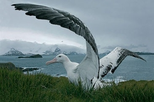
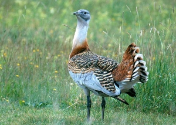
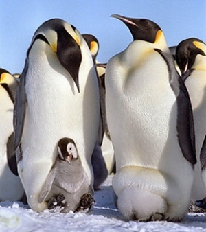

Альбатросы облетают вокруг Земли менее чем за два месяца и могут парить шесть дней без единого взмаха крыльев.
Самая тяжелая из летающих птиц – дрофа. Её вес достигает 20 килограмм. Несмотря на тяжелый подъем, полет у этих птиц необычайно красив.
 Императорский пингвин может голодать до девяти недель, пока высиживает будущее потомство.
Самой «умной» птицей можно назвать воробья. У него на 100 грамм массы тела приходится 4,37 граммов мозга, в то время, когда у лошади – 0,1 г/кг, а у крокодила – не более 0,007 г/кг.
Совы умеют летать совершенно бесшумно. Особые крючки на перьях сов действуют как глушители потока воздуха, в то время как «пух» на задней их кромке обеспечивает беззвучный полёт.
 Самой «умной» птицей можно назвать воробья. У него на 100 грамм массы тела приходится 4,37 граммов мозга, в то время, когда у лошади – 0,1 г/кг, а у крокодила – не более 0,007 г/кг.
Самой «умной» птицей можно назвать воробья. У него на 100 грамм массы тела приходится 4,37 граммов мозга, в то время, когда у лошади – 0,1 г/кг, а у крокодила – не более 0,007 г/кг.